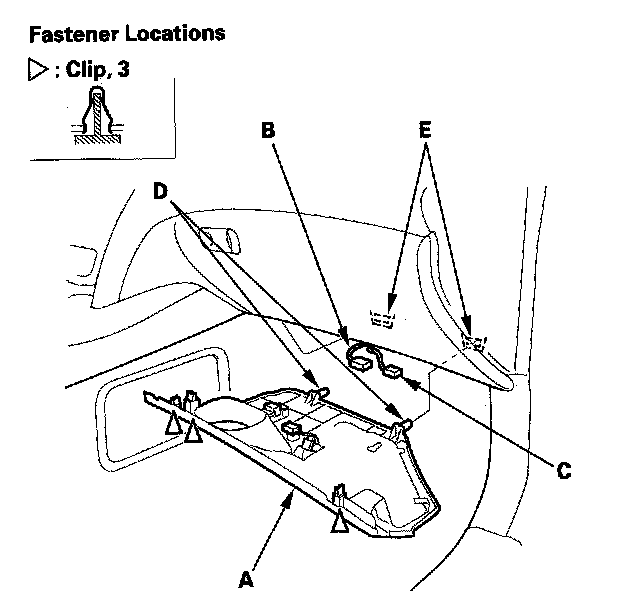

Passenger's Dashboard Undercover
Passenger's Dashboard Undercover Removal/InstallationNOTE: Take care not to scratch the dashboard and its related parts.

1. Remove the Passenger's dashboard undercover (A).
1. Gently pull down the rear edge to detach the clips.
2. Disconnect the footwell light connector (B) and ambient light connector (C).
3. Pull the undercover away to release the pins (D) from the holders (E).
2. Install the undercover in the reverse order of removal, and note these items:
- Replace any damaged clips.
- Push the clips into place securely.
- Make sure that each connector is plugged in properly.
- Make sure the pins of the undercover are installed securely to the holders.